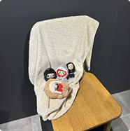
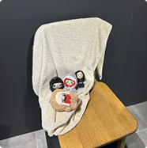

REVIEW
PROTOTYPE
옥승철 개인전
롯데뮤지엄
2025.08.12~2025.09.30
이달의 인기 리뷰 TOP5

극사실주의 조각작품의 거장 론 뮤익의 전시를 한국에서 보게 될 줄이야! 정말 꿈만 같네요. 일단 유명한 전시라서 그런지 아니면 휴일에 가서 그런지 사람이 정말 많았어요. 외국분들도 많이 계셨어요. 줄만 1시간 이상 선 것 같습니다. 그래도 그런 시간이 아깝지 않을 만큼 전시가 멋졌어요. 정말 사람같이 잘 만들었더라고요. 제작 과정을 담은 영상을 보니 더 대단한 작가라고 느껴졌습니다. 전시 끝나기 전에 한 번 더 가고싶어요! 물론 그때도 줄을 1시간 이상 설 것 같지만요. 여유롭게 관람하고 싶으신 분들은 평일 오전에 가시는 것을 추천드립니다!
2025.05.18 김*희
도쿄리벤저스 원화전 다녀왔어요! 작품의 생생한 원화 하나하나가 마치 만화 속에서 튀어나온 듯한 디테일을 자랑했답니다. 특히 인기 장면들이 원화로 재해석되어, 그 힘과 감정이 더욱 깊게 전해지는 느낌이었어요. 스토리보드와 콘티를 통해 애니메이션 제작 과정을 엿볼 수 있었고, 팬으로서 대사 하나하나, 표정 변화 하나까지 놓치지 않도록 세심하게 즐길 수 있었습니다. 전시장에는 멋진 캐릭터 포토존과 체험 코너도 있어 친구들과 함께 웃으며 추억을 만들기 좋았어요. 굿즈 코너에서는 한정 상품도 많아 팬심 충전하기 딱이었답니다. 도쿄리벤저스를 사랑하는 분들에게 절대 놓치지 말라고 추천하고 싶어요!
2025.05.14 변*주
정말 다채롭고 감각적인 시간이었어요. 시대별로 다양한 작품들이 이어져서 마치 시간 여행을 하는 기분이 들었답니다. 모네의 부드럽고 빛나는 인상파 풍경화에서부터 워홀의 대담하고 화려한 팝아트까지, 완전히 다른 분위기와 매력을 한자리에서 느낄 수 있어서 끝까지 눈을 뗄 수가 없었어요. 작품 하나하나마다 시대의 감성과 작가의 개성이 뚜렷하게 담겨 있어서 미술을 잘 몰라도 자연스럽게 빠져들게 되더라고요. 전시 공간도 넓고 쾌적하게 꾸며져 있어서 여유롭게 걸으며 감상하기 좋았고, 곳곳에 포토존도 많아서 추억 남기기에도 딱이었어요. 특히 다양한 스타일이 한데 어우러져 있어서 혼자 와서도 충분히 즐길 수 있고, 친구나 연인과 함께라면 더 풍성한 이야기를 나눌 수 있을 것 같아요. 마음이 풍성해지는 따뜻한 전시라 꼭 한번 가보시길 추천해요.
2025.05.02 조*연
스크린에서만 보던 픽사의 이야기를 현실에서 살아 움직이게 만든 몰입형 전시! 어릴 적 동심도, 어른의 추억도 함께 느낄 수 있는 ‘픽사 월드’를 온몸으로 체험할 수 있어서 정말 특별한 하루였어요. 애니메이션 좋아하는 분들, 온 가족, 연인, 친구 누구와 가도 모두 행복할 거예요.
2025.04.28 나*유
일본에서 하는 것 보고 진짜 가고 싶었는데 한국에서도 하다니 바로 달려갔습니다. 도쿄리벤저스전 전시는 만화와 애니메이션 팬이라면 절대 놓칠 수 없는 특별한 자리였어요. 전시장에 들어서자마자 작품 속 세계가 눈앞에 펼쳐지는 듯한 생생한 원화들과 캐릭터들의 디테일에 감탄이 절로 나왔답니다. 인기 장면들을 재현한 공간들도 곳곳에 마련돼 있어서 마치 내가 그 현장에 함께 있는 것 같은 몰입감을 느낄 수 있었어요. 또 다양한 굿즈와 체험 코너 덕분에 친구들과 신나게 즐기고, 사진 찍을 포인트도 많아서 추억을 남기기에 딱 좋았어요. 전시를 보고 나면 도쿄리벤저스 캐릭터들에 대한 애정이 더욱 깊어져서 팬심이 한층 폭발하는 시간이었고, 만화나 애니메이션을 좋아하는 사람이라면 누구든지 만족할 만한 전시였어요. 혼자 와도 재미있고, 팬들과 함께라면 더 특별한 경험이 될 거예요!
2025.04.19 전*진
“사랑의 단상” 전시 다녀왔는데 생각보다 훨씬 좋았어요. 각 공간마다 사랑의 다양한 감정들이 섬세하게 담겨 있어서 걸어다니는 내내 마음이 몽글몽글해졌어요. 설렘도 있고, 아련함도 있고, 가끔은 뭉클해서 괜히 지난날 생각도 나더라고요. 특히 참여형 작품에서 제 이야기를 적어놓고 나오니까 왠지 더 오래 기억에 남을 것 같아요. 연출도 예쁘고 사진 찍을 포인트도 많아서 시간 가는 줄 모르고 천천히 둘러봤어요. 사랑에 대해 다시 한번 생각해볼 수 있는 따뜻한 전시였고, 누구랑 가든 혼자 가든 다 좋을 것 같아요.
2025.05.18 김*희
알폰스 무하 원화전 다녀왔는데 진짜 눈 호강 제대로 하고 왔어요. 그림 하나하나가 너무 섬세하고 우아해서 마치 시간이 멈춘 듯 빠져들었어요. 특히 거대한 사이즈의 작품들은 실제로 보니 압도감이 장난 아니더라고요. 디테일한 선과 은은한 색감이 너무 아름다워서 한참을 멍하니 바라보다가 나왔어요. 전시 구성도 잘 되어 있어서 편하게 감상할 수 있었고, 사진 찍을 포인트도 많아서 추억 남기기 좋았어요. 아르누보의 매력을 제대로 느낄 수 있는 전시라 강추합니다.
2025.07.02 유*민
정말 따뜻하고 힐링되는 시간이었어요. 그림 속 파리의 골목길과 일상의 풍경들이 하나같이 아기자기하고 사랑스러워서 한 장 한 장 천천히 들여다보게 되더라고요. 멀리서 보면 평화로운 풍경화 같지만 가까이에서 보면 작은 사람들의 모습과 표정까지 세심하게 그려져 있어서 그 디테일에 감탄했어요. 색감도 부드럽고 포근해서 마치 동화 속 세상에 들어온 기분이었고, 마음까지 말랑해지는 느낌이었어요.🪄 특히 밤 풍경을 담은 작품들이 정말 예뻤는데, 조용한 파리의 골목을 혼자 산책하는 기분이 들어 오래오래 머물고 싶었어요. 전시 공간도 아늑하게 꾸며져 있어서 편하게 감상할 수 있었고, 사진 찍을 포인트도 많아서 추억 남기기 좋았어요. 혼자 가도 좋고 누군가와 함께 가면 더 따뜻할 것 같은 전시라서 꼭 추천하고 싶어요.
2025.07.12 이*연
조나단 베르탱 사진전 다녀왔는데 정말 감각적이고 여운이 오래 남는 전시였어요. 사진 하나하나가 몽환적인 분위기로 가득해서 마치 꿈속을 천천히 걷는 듯한 기분이 들었어요. 빛과 그림자를 활용한 연출이 너무 멋져서 자연스럽게 발걸음을 멈추고 한참을 바라보게 되더라고요. 특히 인물 사진에서는 말로 표현하기 어려운 묘한 감정이 전해져서 마음이 살짝 묵직해지기도 했어요. 색감도 은은하면서 강렬한 포인트가 있어서 시선이 계속 머물렀고, 공간 자체가 작품과 잘 어울리게 구성돼 있어서 전시장에 들어선 순간부터 몰입이 됐어요. 조용히 걸으며 사진 속 이야기에 빠져들다 보니 어느새 시간이 훌쩍 지나 있더라고요. 잔잔하지만 강렬한 울림을 주는 전시라 혼자 가서 천천히 감상하면 더 깊이 빠져들 수 있을 것 같아요.
2025.07.28 전*진
미피와 마법우체통 전시 다녀왔는데 너무 귀엽고 동화 같은 시간이었어요. 전시장에 들어서는 순간부터 아기자기한 미피와 알록달록한 공간들이 반겨줘서 절로 미소가 나더라고요. 포토존이 많아서 사진 찍는 재미도 있었고, 아이부터 어른까지 누구나 즐길 수 있는 따뜻한 분위기였어요. 특히 편지 쓰는 공간이 정말 특별했는데, 잠시나마 마음을 차분히 내려놓고 소중한 사람을 떠올릴 수 있는 시간이었어요. 전시를 둘러보는 내내 동심으로 돌아간 듯한 기분이 들어서 나오는 발걸음까지 가벼워졌어요. 혼자 가도 좋고 친구나 가족이랑 함께 가면 더 행복한 전시라 꼭 추천하고 싶어요.
2025.07.19 우*경
정말 다채롭고 감각적인 시간이었어요. 시대별로 다양한 작품들이 이어져서 마치 시간 여행을 하는 기분이 들었답니다. 모네의 부드럽고 빛나는 인상파 풍경화에서부터 워홀의 대담하고 화려한 팝아트까지, 완전히 다른 분위기와 매력을 한자리에서 느낄 수 있어서 끝까지 눈을 뗄 수가 없었어요. 작품 하나하나마다 시대의 감성과 작가의 개성이 뚜렷하게 담겨 있어서 미술을 잘 몰라도 자연스럽게 빠져들게 되더라고요. 전시 공간도 넓고 쾌적하게 꾸며져 있어서 여유롭게 걸으며 감상하기 좋았고, 곳곳에 포토존도 많아서 추억 남기기에도 딱이었어요. 특히 다양한 스타일이 한데 어우러져 있어서 혼자 와서도 충분히 즐길 수 있고, 친구나 연인과 함께라면 더 풍성한 이야기를 나눌 수 있을 것 같아요. 마음이 풍성해지는 따뜻한 전시라 꼭 한번 가보시길 추천해요.
2025.05.02 조*연
제이홉 전시회 다녀왔는데 진짜 놀라웠어요! 무대 밖에서 볼 수 없던 그의 솔직한 감성과 창작 과정이 가득 담겨 있어서 팬이라면 꼭 봐야 할 전시였어요. 그의 음악이 어떻게 탄생했는지, 무대 뒤 숨겨진 이야기가 사진과 영상, 인터랙티브 코너로 생생하게 전해져서 마치 함께 작업하는 기분이 들었답니다. 특히 직접 만져보고 체험할 수 있는 공간들이 많아서 재미도 있고, 그의 예술 세계를 더 깊게 이해할 수 있었어요. 전시장이 넓고 동선도 잘 짜여 있어서 쾌적하게 관람할 수 있었고, 다양한 굿즈와 기념품도 놓치지 마세요! 혼자 가도 좋고, 팬 친구랑 함께 가면 더 즐거운 시간이 될 거예요. 제이홉의 열정과 진심이 그대로 전해지는 특별한 경험이었어요.
2025.07.22 한*주
마르크 샤갈 특별전 다녀왔는데, 그의 작품에서 느껴지는 신비롭고 환상적인 세계에 완전히 빠져들었어요. 샤갈의 그림은 현실과 꿈, 동화와 현실이 자연스럽게 어우러져 있어서 볼 때마다 새롭게 해석할 수 있는 재미가 있더라고요. 특히 동유럽 유대인으로서의 정체성과 그가 겪은 역사적 배경이 작품 속에 은유적으로 녹아 있어, 단순한 미술 감상을 넘어 한 편의 이야기를 듣는 듯했어요. 화려한 색감과 자유로운 형태들이 마치 음악처럼 흐르며 보는 이의 감성을 자극했고, 전시 중간중간 마련된 영상과 편지 원본들이 샤갈의 인간적인 면모를 더욱 가깝게 느끼게 해줬어요. 공간 배치도 여유로워서 집중해서 감상하기 좋았고, 미술에 익숙하지 않은 사람도 충분히 즐길 수 있는 전시였습니다. 예술과 역사를 동시에 경험하고 싶은 분들께 강력 추천해요!
2025.06.29 장*린
극사실주의 조각작품의 거장 론 뮤익의 전시를 한국에서 보게 될 줄이야! 정말 꿈만 같네요. 일단 유명한 전시라서 그런지 아니면 휴일에 가서 그런지 사람이 정말 많았어요. 외국분들도 많이 계셨어요. 줄만 1시간 이상 선 것 같습니다. 그래도 그런 시간이 아깝지 않을 만큼 전시가 멋졌어요. 정말 사람같이 잘 만들었더라고요. 제작 과정을 담은 영상을 보니 더 대단한 작가라고 느껴졌습니다. 전시 끝나기 전에 한 번 더 가고싶어요! 물론 그때도 줄을 1시간 이상 설 것 같지만요. 여유롭게 관람하고 싶으신 분들은 평일 오전에 가시는 것을 추천드립니다!
2025.05.18 김*희
엘리자베스 랭그리터 전시 다녀왔는데 정말 인상 깊고 생각할 거리를 많이 준 시간이었어요. 그녀의 작품은 현대 사회의 다양한 이슈와 인간 내면을 깊이 탐구하는 메시지로 가득해서 한 점 한 점 강렬하게 다가왔답니다. 특히 사회적 정체성과 소수자의 목소리를 예술적으로 풀어낸 방식이 참 신선하고 도전적이었어요. 전시장 곳곳에 설치된 대형 작품들과 영상들이 서로 어우러져 몰입감을 높여줬고, 관객 참여형 코너도 있어서 직접 작품에 관여하는 재미도 있었어요. 공간 배치가 효과적이라 작품 하나하나 꼼꼼히 감상하기 좋았고, 전시 전체가 편안한 분위기라 부담 없이 천천히 둘러볼 수 있었답니다. 작품에 담긴 메시지가 무겁게 느껴질 수도 있지만, 그만큼 많은 생각과 공감을 불러일으켜서 오랫동안 기억에 남을 전시였어요. 예술을 통해 사회 문제와 인간의 본질에 대해 깊이 생각해보고 싶은 분들께 꼭 추천하고 싶어요.
2025.06.19 김*진
일본에서 하는 것 보고 진짜 가고 싶었는데 한국에서도 하다니 바로 달려갔습니다. 도쿄리벤저스전 전시는 만화와 애니메이션 팬이라면 절대 놓칠 수 없는 특별한 자리였어요. 전시장에 들어서자마자 작품 속 세계가 눈앞에 펼쳐지는 듯한 생생한 원화들과 캐릭터들의 디테일에 감탄이 절로 나왔답니다. 인기 장면들을 재현한 공간들도 곳곳에 마련돼 있어서 마치 내가 그 현장에 함께 있는 것 같은 몰입감을 느낄 수 있었어요. 또 다양한 굿즈와 체험 코너 덕분에 친구들과 신나게 즐기고, 사진 찍을 포인트도 많아서 추억을 남기기에 딱 좋았어요. 전시를 보고 나면 도쿄리벤저스 캐릭터들에 대한 애정이 더욱 깊어져서 팬심이 한층 폭발하는 시간이었고, 만화나 애니메이션을 좋아하는 사람이라면 누구든지 만족할 만한 전시였어요. 혼자 와도 재미있고, 팬들과 함께라면 더 특별한 경험이 될 거예요!
2025.05.18 김*희
애니메이션 최애의 아이 원화전 다녀왔어요! 전시장에 들어서자마자 작품 속 캐릭터들이 살아 움직이는 듯한 느낌을 받았어요. 특히 호시노 아이 원화는 정말 눈을 뗄 수 없을 만큼 빛나고 예뻤어요. 섬세한 선과 표현력으로 캐릭터의 매력이 고스란히 전해져, 실제 애니메이션보다도 더 깊은 감동을 받았답니다. 스토리보드, 콘티, 배경 미술 등 애니메이션 제작 과정을 엿볼 수 있는 전시 구성도 팬들에게 큰 즐거움이었어요. 전시장 곳곳에 마련된 포토존과 굿즈 코너에서 친구들과 함께 추억을 남기며 즐거운 시간을 보냈고, 혼자 가도 충분히 몰입할 수 있는 특별한 경험이었답니다. 애니메이션 팬이라면 절대 놓치지 말아야 할 전시입니다!
2025.07.07 호*아
‘아니메쥬와 지브리전’ 다녀왔어요! 일본 애니메이션 잡지 ‘아니메쥬’의 창간부터 최근호까지 애니메이션 역사를 한눈에 볼 수 있어서 정말 뜻깊었답니다. 각 시대별 인기 작품과 팬들의 반응을 생생하게 담아 애니메이션 산업의 흐름을 쉽게 이해할 수 있었어요. 특히 스튜디오 지브리 존에서는 ‘벼랑 위의 포뇨’의 아름다운 원화와 섬세한 배경 미술을 직접 볼 수 있었는데, 자연과 생명의 소중함을 담은 작품의 감동이 고스란히 전해졌어요. 미야자키 하야오 감독의 제작 노트와 인터뷰 영상도 함께 전시되어 그의 창작 철학과 따뜻한 인간미를 엿볼 수 있어 더욱 특별했답니다. 전시 곳곳에 마련된 포토존과 체험 코너 덕분에 아이부터 어른까지 모두 즐겁게 참여할 수 있었고, 다양한 굿즈 코너에서는 마음에 드는 기념품도 듬뿍 챙겼어요. 애니메이션 팬뿐만 아니라 가족 단위 관람객에게도 추천하고 싶은 전시로, 작품과 역사를 동시에 즐길 수 있는 특별한 경험이었어요. 애니메이션을 사랑하는 분이라면 꼭 방문해보세요!
2025.07.28 유*연
인스타에서 우연히 스크롤하다가 전시 사진 보고 “어? 예쁘다” 싶어서 가봤는데, 진짜 완전 취향저격 당했어요. 처음엔 그냥 감성 전시겠거니 하고 간 건데, 막상 가보니 비주얼이 미쳤습니다… 전시장 전체가 하나의 거대한 포토존 같았고, 작품 하나하나가 너무 감각적이라서 눈이 계속 즐거웠어요. 특히 색감이 너무 예뻐서, 카메라가 다 못 담는게 아쉽습니다. 차분한 색감부터 팝한 색까지 다양하게 쓰여 있는데, 완전 귀엽습니다. 일상을 주제로해서 그런지 보는 재미도 있었어요. 전시장 전체 동선도 좋았고, 작품 자체가 너무 힙해요. 솔직히 그냥 예쁜 곳 가는 기분으로 갔는데, 예쁨 + 감동이 같이 와서 만족도 진짜 높았어요. 피드 꾸미기에도 딱이고, 친구들이 어디냐고 물어볼 만한 사진 건질 수 있어요.
2025.07.09 변*주
호아킨 소로야 전시를 다녀왔어요! 스페인 발렌시아 출신의 대표적인 인상주의 화가인 소로야는 바다, 부인, 그리고 고향을 사랑한 작품 세계로 유명하죠. 전시에서는 그의 대표작인 '바닷가에서'와 '발렌시아의 해변' 등 바다를 주제로 한 작품들을 감상할 수 있었어요. 특히, 햇살 아래 반짝이는 바다와 해변에서 여유를 즐기는 사람들의 모습은 마치 그곳에 있는 듯한 몰입감을 주었답니다. yes24.com 또한, 소로야의 아내인 클로디아와 자녀들을 그린 초상화들도 인상 깊었어요. 그의 집 정원에서 가족과 함께한 일상을 담은 작품들은 따뜻한 가족애와 소로야의 인간적인 면모를 엿볼 수 있었답니다. 그의 작품을 통해 스페인의 햇살과 바다, 그리고 사랑하는 이들과의 소중한 순간들을 함께 느낄 수 있었어요. 스페인과 바다, 그리고 부인이라는 세 가지 키워드로 그의 작품 세계를 더욱 깊이 이해할 수 있는 시간이었답니다.
2025.08.01 한*소도쿄卍리벤저스展
 



일본에서 하는 것 보고 진짜 가고 싶었는데 한국에서도 하다니 바로 달려갔습니다. 도쿄리벤저스전 전시는 만화와 애니메이션 팬이라면 절대 놓칠 수 없는 특별한 자리였어요. 전시장에 들어서자마자 작품 속 세계가 눈앞에 펼쳐지는 듯한 생생한 원화들과 캐릭터들의 디테일에 감탄이 절로 나왔답니다. 인기 장면들을 재현한 공간들도 곳곳에 마련돼 있어서 마치 내가 그 현장에 함께 있는 것 같은 몰입감을 느낄 수 있었어요. 또 다양한 굿즈와 체험 코너 덕분에 친구들과 신나게 즐기고, 사진 찍을 포인트도 많아서 추억을 남기기에 딱 좋았어요. 전시를 보고 나면 도쿄리벤저스 캐릭터들에 대한 애정이 더욱 깊어져서 팬심이 한층 폭발하는 시간이었고, 만화나 애니메이션을 좋아하는 사람이라면 누구든지 만족할 만한 전시였어요. 혼자 와도 재미있고, 팬들과 함께라면 더 특별한 경험이 될 거예요!
변*주 2025.07.09